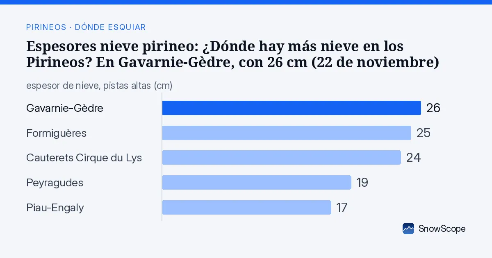

Espesores nieve pirineo: ¿Dónde hay más nieve en los Pirineos? En Gavarnie-Gèdre, con 26 cm (22 de noviembre)
Espesores nieve pirineo – ¿Dónde hay hoy más nieve en los Pirineos? Si buscas la mayor cantidad de nieve en los Pirineos hoy, mira Gavarnie-Gèdre (Francia): unos 26 cm arriba. Después vienen Formiguères (25 cm) y Cauterets Cirque du Lys (24 cm). En la región, 44 de 53 estaciones en los Pirineos tienen nieve arriba hoy, y SnowScope encuentra 3460 km² de suelo blanco. En el campo siempre llevamos una sonda; estas cifras dicen adónde ir, la sonda dice qué hay bajo los esquís.
Consulta la previsión de nieve en tiempo real de Gavarnie-Gèdre en la app SnowScopeEspesor de nieve, alertas de nieve polvo y mapa 3D, gratis.
La nieve en las pistas hoy
La superficie blanca ha cambiado: 1570 km² el 20 de noviembre, 3460 km² hoy y 9560 km² esperados el 25 de noviembre.
| Estación | Espesor de nieve | Nieve nueva, 72 h | Previsto, próximos días | Cota máx. |
|---|---|---|---|---|
| Gavarnie-Gèdre | 26 cm | 10 cm | 14 cm | 2283 m |
| Formiguères | 25 cm | 4 cm | 7 cm | 2305 m |
| Cauterets Cirque du Lys | 24 cm | 14 cm | 26 cm | 2420 m |
| Peyragudes | 19 cm | 6 cm | 9 cm | 2360 m |
| Piau-Engaly | 17 cm | 13 cm | 14 cm | 2527 m |

Qué esperar después
Entre hoy y el 25 de noviembre esperamos 26 cm en Cauterets Cirque du Lys, 14 cm en Gavarnie-Gèdre y 14 cm en Piau-Engaly.
El 23 de noviembre la cota de congelación en Gavarnie-Gèdre sube a 1990 m-2950 m, más alta que la cima de los remontes (2283 m): cuenta con lluvia o nieve húmeda en todas las pistas.
Las previsiones a varios días pueden cambiar: vuelve a mirar el mapa el día antes de viajar.
Lo que vieron las estaciones
El 21 de noviembre, la estación de medida Boí (2.537 m) (2537 m) midió 9 cm en el suelo, con 3 cm de nieve nueva en 24 horas. El 21 de noviembre, la estación de medida Núria (1.971 m) (1971 m) midió 6 cm en el suelo. En la estación de medida Das - Aeròdrom (1096 m), la nieve medida en el suelo era de 3 cm el 21 de noviembre.
Nuestras cifras de las estaciones de esquí son estimaciones para las pistas altas. Las de las estaciones de medida son medidas reales, pero de un solo punto y en la fecha indicada.
Frente a otros inviernos
En Gavarnie-Gèdre, el suelo a 2050 m sigue desnudo hoy, cuando lo habitual en esta fecha es 4 cm. Solo 11 de los 46 inviernos pasados tenían tan poca.
Nada raro en Formiguères: 3 cm a 2021 m hoy, más que en 21 de los 46 inviernos pasados, con 3 cm como lo habitual.
Comienzo lento en Cauterets Cirque du Lys: a 2072 m SnowScope muestra solo 1 cm, menos que los 7 cm habituales; el 22 de noviembre, solo 9 de los 46 inviernos pasados tenían menos.
Consejos para esquiadores
- Nieve en el mapa no significa que la estación esté abierta: consulta remontes y fechas de apertura en su web.
- La nieve de principio de temporada es fina. Quédate en pistas abiertas y pisadas: piedras y hierba están justo debajo.
- Las laderas sur reciben más sol y se funden antes; las laderas norte en altura guardan su nieve más tiempo.
- Antes de salir fuera de pista o de travesía, lee el boletín oficial de aludes (enlaces abajo).
- Activa una alerta de nieve polvo en la app SnowScope para saber cuándo Gavarnie-Gèdre recibe nieve nueva.
Sobre estas cifras
Los espesores de nieve de las estaciones son la nieve más profunda en las pistas altas en la fecha indicada; son estimaciones para una zona, no una medida en un punto. Las previsiones pueden cambiar. Consulta siempre el boletín oficial de aludes antes de salir fuera de pista.
Boletines oficiales de aludes: Météo-France / Meteocat / AEMET
Citar este informe
Para investigación, docencia o prensa: cifras y gráficos reutilizables libremente bajo CC BY 4.0 con esta cita.
SnowScope (2026), Espesores nieve pirineo: ¿Dónde hay más nieve en los Pirineos? En Gavarnie-Gèdre, con 26 cm (22 de noviembre), https://snowscope.app/blog/es/2026/11/pyrenees-gavarnie-gedre-snow-depth-today-22-november-2026.html, consultado el 2026-11-22
SnowScope (Atlas Labs). (2026, November 22). Espesores nieve pirineo: ¿Dónde hay más nieve en los Pirineos? En Gavarnie-Gèdre, con 26 cm (22 de noviembre). SnowScope snow reports. https://snowscope.app/blog/es/2026/11/pyrenees-gavarnie-gedre-snow-depth-today-22-november-2026.html
BibTeX
@misc{snowscope2026pyreneesgavarniegedresno,
author = {{SnowScope (Atlas Labs)}},
title = {Espesores nieve pirineo: ¿Dónde hay más nieve en los Pirineos? En Gavarnie-Gèdre, con 26 cm (22 de noviembre)},
year = {2026},
month = nov,
howpublished = {\url{https://snowscope.app/blog/es/2026/11/pyrenees-gavarnie-gedre-snow-depth-today-22-november-2026.html}},
note = {Published 2026-11-22 10:48 UTC; accessed 2026-11-22}
}· CC BY 4.0 · Métodos, datos y herramientas →
Gavarnie-Gèdre: nieve y temperatura según la altura, este invierno vs el pasado (herramientas) →
Sigue Gavarnie-Gèdre
Gratis: un aviso cuando llega la nieve y la previsión cada mañana.